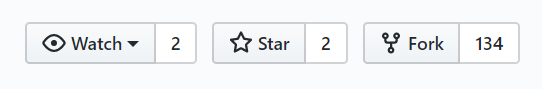
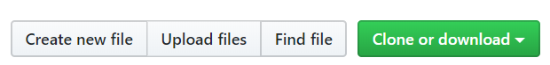
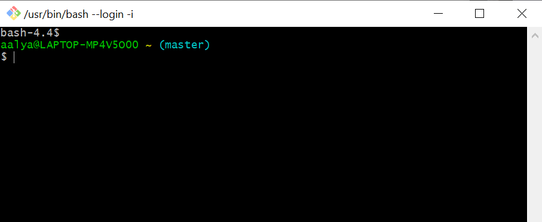
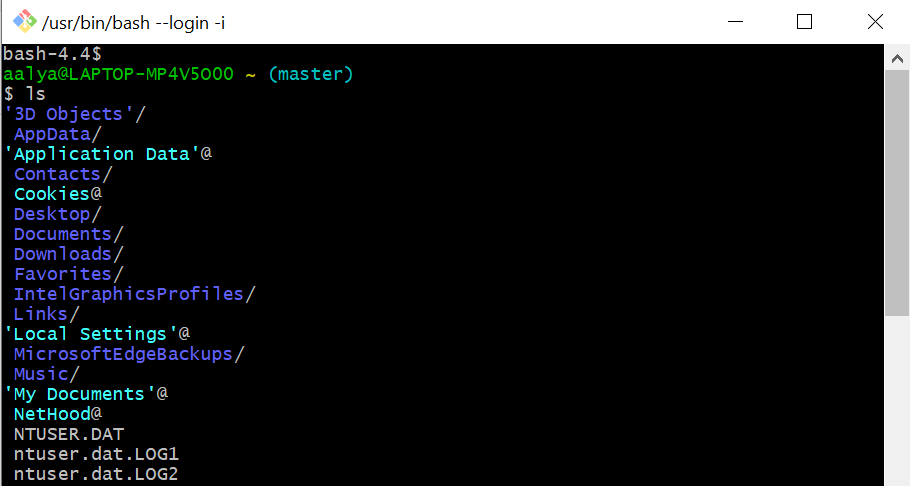
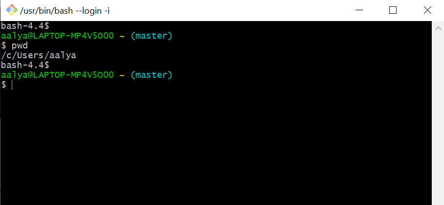
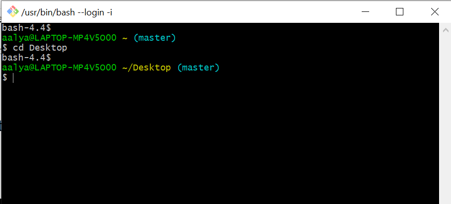
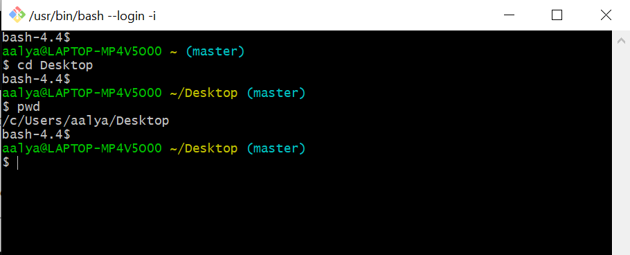
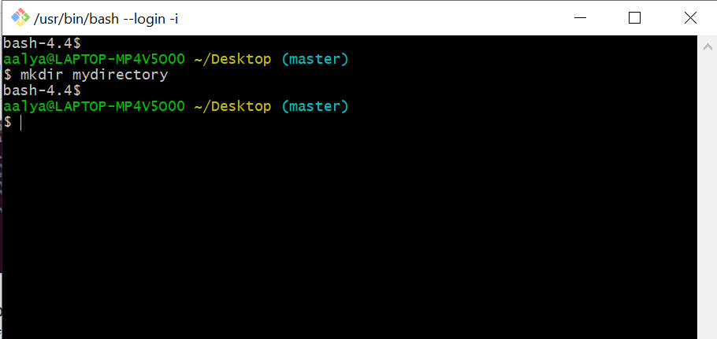

Git version control workflow consists of four fundamental elements as shown in the block diagram above.
The working directory is the area where you are working with when you're making changes to your file. It is a single checkout of one version of the project. The files are pulled out of the Git directory and placed in the working directory for you to work on. Git directory is the place where Git stores all the information (i.e. the metadata and object database) necessary for your project.
The staging area is a file which is generally located in the Git directory and stores information about what will go into your next commit. A commit is a snapshot of your local repository at one point in time i.e. the state of all the files in your repository at a specific point in time. Only the changes in the staging area are put into the next commit. The staging area is also known as index. For consistency, we will stick to calling it staging area in this document.
A repository is just the directory where Git will keep an eye on things for you by storing all the files and folders necessary for your project. You can create repositories for each of your projects locally and globally. Local repository is present in your computer and has the Git directory for your project. In contrast, remote repository has the Git directory stored in some remote location. Github is a famous platform for remote repositories.
A basic Git workflow consists of the following steps:
Now for the opposite flow i.e. when extracting files from the remote repository (demonstrated by blue arrows in the Git workflow block diagram), you use the command git fetch to extract files from the remote repository to your local repository. Note that at this point the project files are not yet in the working directory. In order to do that you use the command git merge. This will update the project files in your working directory to what was in the remote repository at the time of fetch. Alternatively you can use git pull command to get the files from remote directly directly into your working directory. You can check the changes between the project files in your working directory and local repository by running git diff HEAD command. Similarly,by just running the git diff command you can check the difference between your staging area and the working directory. This can be handy when you want to know all the changes that you made but not yet staged as well as the changes that are staged and about to be committed.
Now that you are familiar with basic Git workflow, lets look at some of the common terms that we come across in Git version control system.
A pull request in Git lets you submit changes that you have made in your local repository to a remote repository in order to be reviewed and considered for inclusion in project's main repository. Once a pull request is sent, those who have access to the remote repository can review the changes, flag any problems, discuss potential modifications and even push follow-up commits if necessary.
Branch is basically an independent line of development. Branches allow us to work on different versions of the same file in parallel. In Git, creating a branch means deviating from the main branch to continue working without messing up the main branch. Our edits on one branch can be independent from work on other branches. We can then incorporate or merge our changes to other branches. We can have branches for different purposes such as production, development and debugging.
The default branch name in Git is master. Every time you commit, the master branch pointer moves forward automatically. A new branch can be created using the git branch command. Changes made in other branches can be merged into master branch using the git merge command.
In Github, a fork is a copy of a repository. Forking a repository allows you to make changes to a project without affecting the original project. Forking is something you do when you are not a direct collaborator to a project. You can fork a repository simply by clicking on the fork button in the header (top right corner) of a repository as shown in the image below .
Cloning on the other hand means, creating a local copy a remotely located project on your computer so that you can sync between the local and remote locations of the project. In Git, cloning can be performed using the command git clone. Alternatively, you can clone remote repositories from Github to your local repository by clicking on the clone button as shown below.
A shell is a program that provides an interface between a user and an operating system (OS) kernel. It interprets the commands the user types and arranges for them to be executed. Unix shell is a command line interface in which you can enter commands by typing or uploading a file.
Bash is a default shell available on Linux and MacOs. It stands for Bourne Again Shell. In Windows Operating System, we use Git Bash which is an application that provides Git command line experience on the operating system.
When logging into the Git Bash app in Windows, the default prompt looks something like this.
which translates to:
username @ current computer: current directory $
The prompt can be customized to show what you want. You can start typing commands after the $ sign. Now let us perform some of the common operations in Unix Shell using Git Bash.
You can use the ls command to list the files and directories in the current working directory.
You can limit the files that are displayed by using fragments of filenames and wildcards as shown below:
| ls star | Lists files whose complete name is star; if star is a directory, it will display the contents of the star directory |
| ls sta* | Lists all files in the directory that begin with the characters sta (e.g. sta, star, stardom, starwars.) |
| ls star? | Lists all files in the directory that begin star followed by one character (e.g. star1, star2, stars.) |
When using ls command, you can control what is displayed by adding options to it. Some of the common options are listed below.
| -a | Shows all files, including those beginning with a period (.). |
| -d | Shows directory names, but not contents |
| -F | Marks special files with symbols to indicate what they are: "/" for directories, "@" for symbolic links, "*" for executable programs |
| -l | Shows the rights to the file, the owner, the size in bytes and time of last modification. |
| -R | Recursively lists subdirectories |
You can display your working directory using the pwd command.
The above example shows that the user is currently in aalya folder in the Users directory of C drive
.You can change the working directory to a different one using the cd command followed by the directory name.
The above example shows that the working directory has been changed to Desktop under aalya folder in the Users directory of C drive. A quick check using pwd command will confirm this.
. You can create a new directory by using the mkdir command followed by the directory name.
In the above snapshot, a new directory named mydirectory has been created in the working directory i.e.Desktop in this case. You can check the existence of the new directory that has just been created simply by running the ls command or directly going to the working directory.
There are different ways to create a file in Unix shell:
Using touch command
$ touch myfile.txt
In the above example, a new text file named myfile is created in the working directory. The newly created file will be listed when running the ls command.
Using nano text editor
$ nano myfile.txt
This is run a text editor called Nano and create a file named myfile.txtFiles can be removed in Unix shell using the rm command.
$ rm myfile.txt
In the above example, file named myfile.txt is removed from the working directory.
I have only scratched the surface of what is Git workflow and Unix shell. You can learn more on some of the advanced features of Git here. There are also plenty of resources available online on Unix shell. Like most new concepts, the best way to learn Unix shell is to play around with it, until you know most commands by heart.